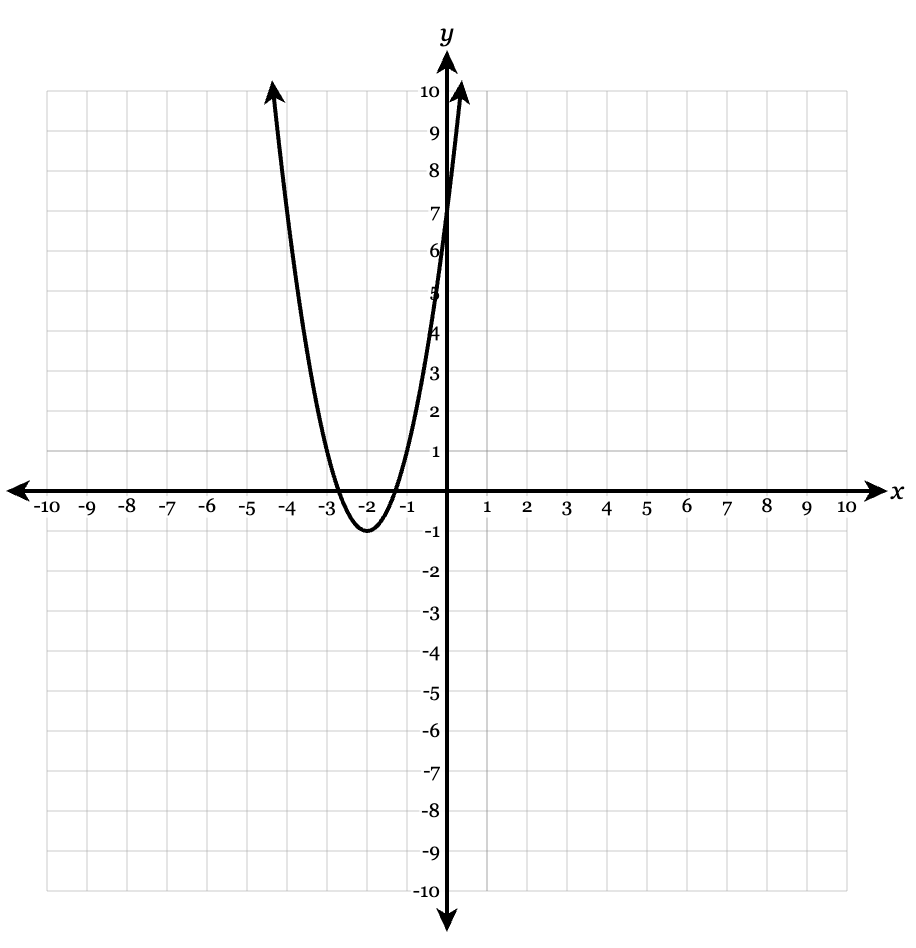
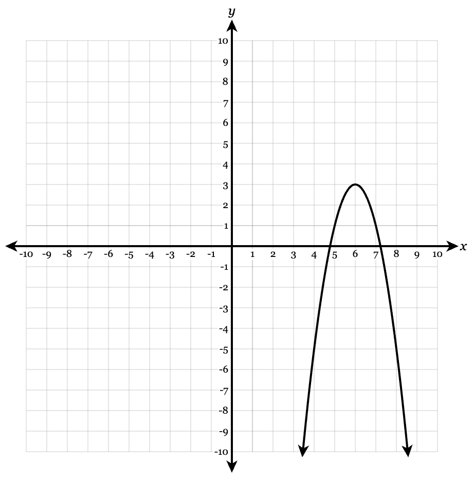
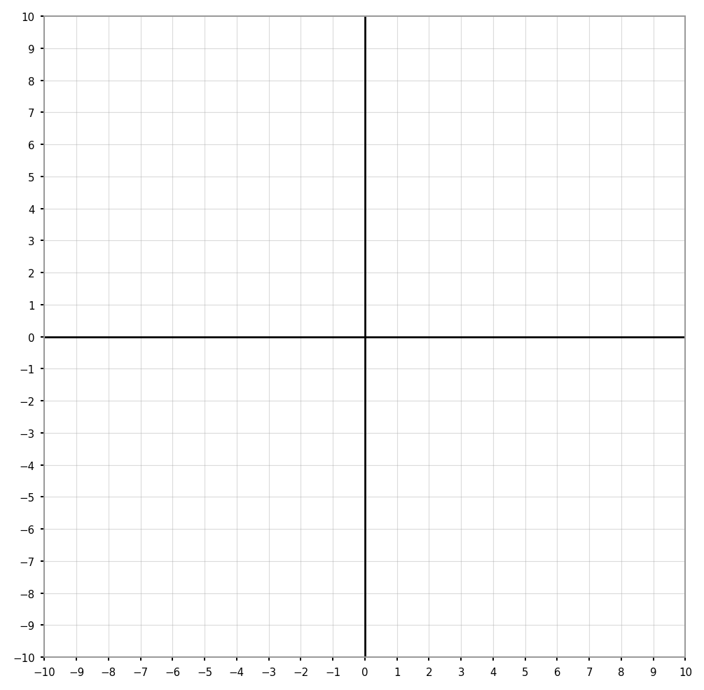

Identify the form of each quadratic equation: standard form, vertex form, or intercept form.
\(y=2x^2-5x+3\)
\(y=-3(x-4)^2+7\)
\(y=(x+2)(x-6)\)
\(y=-\frac12(x-1)(x+5)\)
Identify the vertex of each quadratic.
\(y=(x-3)^2+5\)
\(y=(x+4)^2-2\)
\(y=-2(x-1)^2+7\)
Match each function to its transformation from \(y=x^2\).
\(y=(x-4)^2\)
\(y=x^2+6\)
\(y=-x^2\)
\(y=3x^2\)
Transformations:
reflection over the \(x\)-axis
shift right 4
vertical stretch by a factor of 3
shift up 6
For each function, state the \(x\)-intercepts.
\(f(x)=(x-4)(x+2)\)
\(g(x)=3(x-1)(x-8)\)
\(h(x)=-2(x+6)(x-3)\)
Use the graph to identify the key features of the quadratic function.

Identify the vertex.
State the axis of symmetry.
Identify the \(x\)-intercepts.
State whether the vertex is a maximum or minimum.
Write a possible equation in vertex form.
For each value of \(\Delta\), state the number of real solutions.
\(\Delta=25\)
\(\Delta=0\)
\(\Delta=-12\)
\(\Delta=3\)
Use the graph to write and interpret a quadratic model.

Identify the vertex and explain what it tells you about the graph.
Identify the \(x\)-intercepts.
State the axis of symmetry.
Write a possible equation in intercept form.
Rewrite the equation in vertex form.
Match each description to the correct range.
A parabola opens up and has vertex \((3,-4)\).
A parabola opens down and has vertex \((-2,7)\).
A parabola opens up and has vertex \((0,5)\).
A parabola opens down and has vertex \((6,-1)\).
Ranges:
\(y\le 7\)
\(y\ge -4\)
\(y\le -1\)
\(y\ge 5\)
Solve by factoring.
\(x^2+9x+20=0\)
\(x^2-3x-18=0\)
\(x^2-64=0\)
Solve using the quadratic formula.
\[2x^2-5x-3=0\]
For each equation:
calculate \(\Delta\)
predict the number of real solutions
solve if real solutions exist
\(x^2-12x+36=0\)
\(x^2-12x+20=0\)
\(x^2-12x+40=0\)
A parabola has vertex \((3,7)\) and passes through the point \((5,15)\). Write the equation in vertex form.
A quadratic has \(x\)-intercepts at \((-4,0)\) and \((6,0)\), and passes through \((0,-24)\).
Write the equation in intercept form.
Rewrite the equation in standard form.
The table shows a quadratic function. \[ \begin{array}{c|ccccc} x&0&1&2&3&4\\ \hline y&5&8&13&20&29 \end{array} \]
Find the first differences.
Find the second differences.
Determine the value of \(a\).
Write an equation for the function.
For the function
\(f(x)=x^2-6x+5\)
find:
the \(y\)-intercept
the axis of symmetry
the vertex
whether the vertex is a maximum or minimum
the range
The height of a ball is modeled by
\(h(t)=-16t^2+64t+5\)
where \(t\) is time in seconds and \(h(t)\) is height in feet.
Find the time when the ball reaches its maximum height.
Find the maximum height.
What is the initial height?
Explain what the vertex means in context.
A student says, “The graph of \(y=(x+5)^2-2\) shifts right 5 and down 2.” Explain the student’s mistake. Then describe the correct transformation.
A student factors:
\(x^2+2x-24\)
as:
\((x+6)(x-4)\)
Then solves:
\(x=-6,\quad x=4\)
Is the student correct? Explain how you can check without expanding everything.
A student calculates the discriminant for:
\[2x^2-3x+8=0\]
as:
\[\Delta=(-3)^2-4(2)(8)=9-64=-55\]
“Since the discriminant is negative, there are no solutions.”
What should the student have said instead? Explain carefully.
Compare these two equations: \[ f(x)=2(x-3)^2-8 \] \[ g(x)=2(x-1)(x-5) \]
Rewrite both equations in standard form.
Explain why they represent the same function.
State the vertex and zeros.
The table shows a quadratic function. \[ \begin{array}{c|ccccc} x&-3&-2&-1&0&1\\ \hline y&14&5&0&-1&2 \end{array} \]
Use differences to verify the function is quadratic.
Write the equation in standard form.
Rewrite the equation in vertex form.
Explain what each form reveals.
A student says:
“The range of \(y=-3(x-2)^2+5\) is \(y\ge 5\) because the vertex has \(y=5\).”
Explain the mistake and state the correct range.
A quadratic has \(x\)-intercepts at \((-1,0)\) and \((7,0)\), and opens upward.
What is the axis of symmetry?
What kind of value does the vertex represent?
Where is the function decreasing?
Where is the function increasing?
Explain how you know without finding the full equation.
For each equation, choose the most efficient method: factoring, completing the square, or quadratic formula. Then justify your choice.
\(x^2-9x+20=0\)
\(x^2+4x-1=0\)
\(3x^2-8x+2=0\)
\(x^2+12x+36=0\)
A water fountain shoots water upward. The height of the water is modeled by \(h(t)=-5(t-2)^2+21\), where \(t\) is time in seconds and \(h(t)\) is height in feet.
Identify the vertex and interpret it in context.
Determine the height at \(t=0\).
Determine another time when the water is the same height as at \(t=0\).
Explain how symmetry helps answer part c.
State a reasonable domain for the model and justify it.
A ball is launched from the ground. Its height is modeled by:
\(h(t)=-2t(t-6)\)
where \(t\) is time in seconds and \(h(t)\) is height in meters.
What are the zeros of the function?
Interpret each zero in context.
Find the time when the ball reaches its maximum height.
Find the maximum height.
Explain how factored form helps answer the question efficiently.

A ball is thrown upward from a platform. Its height is modeled by:
\[h(t)=-16t^2+48t+64\]
where \(h(t)\) is height in feet and \(t\) is time in seconds.
Rewrite the function in vertex form by completing the square.
Identify and interpret the vertex.
Use the quadratic formula to determine when the ball hits the ground.
Explain why one solution may not make sense in context.
State a reasonable domain for the model.
A quadratic function is shown by the table. \[ \begin{array}{c|ccccc} x&0&1&2&3&4\\ \hline f(x)&12&3&-2&-3&0 \end{array} \]
Use first and second differences to verify the function is quadratic.
Write the equation in standard form.
Rewrite the equation in vertex form.
Find the zeros using a method of your choice.
Explain how the table, standard form, vertex form, and zeros all describe the same function.
A farmer has \(100\) meters of fencing to enclose a rectangular field along a river. No fencing is needed along the river. Let \(x\) be the width perpendicular to the river.
Write an area function in terms of \(x\).
Find the dimensions that maximize area.
Find the maximum area.
State a reasonable domain for the model.
Explain why the domain is restricted in context.
A quadratic has zeros \(x=-4\) and \(x=10\). It passes through \((2,-48)\).
Write the equation in intercept form.
Find the vertex.
Rewrite the equation in vertex form.
Rewrite the equation in standard form.
Explain which form is most useful for finding zeros, vertex, and \(y\)-intercept.
Two different quadratic models are proposed for the same revenue situation:
\(R_1(p)=-2(p-12)^2+288\)
\(R_2(p)=-2p^2+48p\)
Show that the two models are equivalent.
Identify the price that maximizes revenue.
Identify the maximum revenue.
Find the break-even prices.
Explain which form is most useful for each feature.
Two students solve the same equation:
\[2x^2-8x-3=0\]
Student A uses completing the square.
Student B uses the quadratic formula.
Solve the equation using completing the square.
Solve the equation using the quadratic formula.
Show that the answers are equivalent.
Explain which method is more efficient for this equation and why.